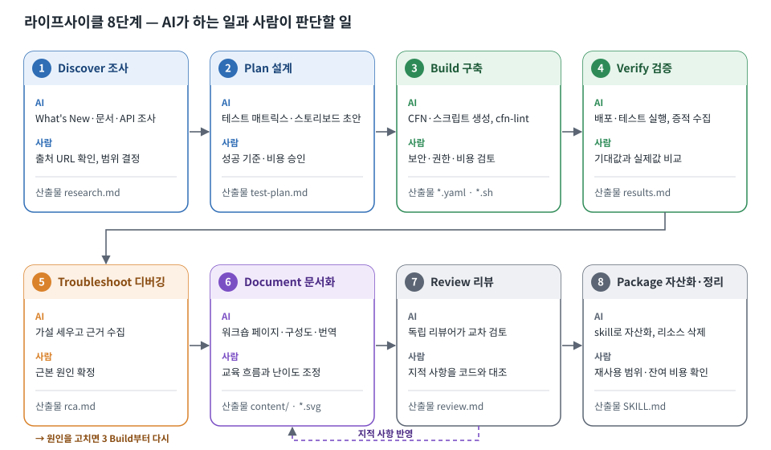

2. 라이프사이클 개요¶
신규 기능 테스트와 워크숍 제작은 같은 8단계를 거칩니다. 각 단계에서 AI가 잘하는 일과 사람이 판단해야 할 일이 다릅니다. 이 구분이 이 워크숍의 뼈대입니다.

단계별 정리¶
| # | 단계 | AI에게 맡기는 일 | 사람이 판단할 일 | Claude Code 기능 | Lab |
|---|---|---|---|---|---|
| 1 | Discover 조사 | What's New, 사용자 가이드, API·CLI·CloudFormation 지원 범위, 리전, 쿼터 조사 | 출처가 공식 문서인지 확인하고 테스트 범위를 정함 | AWS MCP 서버 (문서 검색) | Lab 1 |
| 2 | Plan 설계 | 테스트 매트릭스나 워크숍 스토리보드 초안, 성공 기준, 비용 추정 | 시나리오와 비용 승인 | plan mode, skill (net-test-plan) |
Lab 1, 5 |
| 3 | Build 구축 | CloudFormation, 인증서·테스트 스크립트 생성 | 보안 그룹·IAM·비용 검토 | cfn-lint, 권한 규칙 |
Lab 2, 5 |
| 4 | Verify 검증 | 배포, 테스트 실행, 증적(명령 출력·로그) 수집, 결과표 작성 | 기대값과 실제값이 다를 때 원인이 테스트인지 기능인지 판단 | Bash, SSM, 백그라운드 작업 | Lab 3 |
| 5 | Troubleshoot 디버깅 | 가설을 세우고 describe-*·로그·Reachability Analyzer로 근거 수집 |
근본 원인 확정, 수정 승인 | plan mode, 읽기 전용 권한 | Lab 4 |
| 6 | Document 문서화 | Workshop Studio 페이지, 구성도, 번역 | 교육 흐름과 난이도 조정 | skill (구성도, 번역) | Lab 5 |
| 7 | Review 리뷰 | 작성자와 분리된 리뷰어가 교차 검토 | 지적 사항을 실제 코드와 대조 | subagent, 다른 모델(Codex CLI) | Lab 6 |
| 8 | Package 자산화·정리 | 반복 절차를 skill로 만들기, 리소스 삭제 | 재사용 범위, 남은 비용 확인 | skill, hook | Lab 6, 정리 |
세 가지 원칙¶
1. 단계마다 산출물을 파일로 남긴다¶
research.md → test-plan.md → *.yaml → results.md → rca.md 순서로 파일이 쌓입니다. 다음 단계의 Claude는 대화 기록이 아니라 이 파일을 읽고 작업합니다. 그래서 /clear로 컨텍스트를 비워도 작업이 이어지고, 동료에게 넘기기도 쉽습니다.
2. 다음 단계로 넘어가기 전에 검증한다¶
| 단계 | 검증 방법 |
|---|---|
| Discover | 모든 사실에 공식 문서 URL이 붙어 있는가? 링크를 직접 열어 확인했는가? |
| Plan | 각 테스트 케이스에 기대 결과가 미리 적혀 있는가? |
| Build | cfn-lint를 통과하는가? 문서에 없는 속성이 들어가 있지 않은가? |
| Verify | 결과표의 각 칸에 명령 출력이나 로그가 증적으로 붙어 있는가? |
| Troubleshoot | 원인을 고친 뒤 같은 테스트로 다시 확인했는가? |
| Review | 리뷰어가 작성자의 설명 없이 산출물만 보고 판단했는가? |
3. 한 번 더 할 일은 자산으로 만든다¶
두 번째로 같은 일을 시키게 되면 skill로 만듭니다. Lab 6에서는 Lab 1–4의 흐름을 net-feature-test skill로 만듭니다. 다음 신규 기능이 나오면 /net-feature-test <기능 이름>으로 시작할 수 있습니다.
두 트랙의 아키텍처¶

VPC 1개, internal NLB 1개, 백엔드 EC2 2대, 클라이언트 EC2 1대로 구성합니다. 클라이언트 인증서를 바꿔 가며 NLB의 trust store 검증 결과를 확인합니다. Lab 1–4에서 이 환경을 설계하고, 만들고, 검증하고, 고장 내고, 고칩니다.
마이그레이션 전: 서울과 도쿄의 Transit Gateway를 peering으로 연결하고, prod와 dev를 TGW route table로 분리합니다.

마이그레이션 후: 두 TGW를 Cloud WAN core network에 peering하고, TGW route table attachment로 prod·dev segment에 연결합니다.

Lab 5에서 이 마이그레이션을 다루는 워크숍 모듈을 만듭니다.